评级说明
配套视频：【命运 2】购物清单 紫枪部分杂谈
在不同场景下，不同武器的推荐分级会出现变化。主要区分场景：高难宗师、副本清怪／机制、副本输出。伤害 DPS 参考武器框架页。
T0：无替代性，独一档
T1：强力，不错的选择
T2：能用
T3：一般
T4：不建议使用
为了更精细化评级，会出现 T0.5／T1.5 的小数点评级。评级只是为了提供衡量强度的标准，请勿上纲上线。不会出现 PVP 枪，不会出现基本没有用途的枪。
如何衡量一把武器的价值？
清怪／高难宗师等：
①武器形态优秀，对精准伤害要求不高
②武器伤害合格
③武器弹药经济优秀：弹药生成属性高，每盒弹药总伤高
④功能性：技能回转（超凡／大招），硬减软减获取，高频率 dot，辅助队友（奶枪／切割／疲惫）……
输出：
①伤害高：DPS 高，切换 DPS 高
②总伤高
③爆发高
④功能性：劫子弹，高频率 dot，技能回转……
冲击支撑如果不带神器废墟石板的不稳定神枪手和 NPA 的不稳定流动，则一定要和不稳定弹药 Perk 搭配。面对怪的 DPS 从高到低：手枪、手炮、自动步枪／脉冲／弓箭、斥候、微冲。在有 vog 套的情况下比起羸弱能量球会更倾向带增伤 Perk。
动能武器：如果不反感 pve 打精准的话，可以尝试萤火虫+墓碑，萤火虫可以自动碎掉墓碑的冰块造成高伤范围爆炸，而萤火虫又是火属性武器伤害，就实现了一把枪触发预言 4 的抵抗 3 效果和回复 16% 近战手雷能量，携带药剂师或女王香炉的迎接风暴还可以同时射出减速弹片，也可利用寒风凛凛获取冰霜护甲。
通常动能和虚空是最佳的清怪传说白弹：虚空因为不稳定弹药给予的清怪能力，冲击支撑给予的生存能力，动能因为羸弱能量球+动能震颤和天生的对非战斗人员有天生的 15% 增伤。
重弹狙
类型评级 T0。配合加密数据盘，翻新 A499 就是最无脑的 T0 精准输出武器，总伤/每盒弹药总伤都是相当不错，剑狙双切的 DPS 会进一步提升（尖塔套更高），搭配动能合成边打边劫总伤也趋近无限，在高难中也是非常优秀的武器
| 武器 | 图标 | 评级 | 框架 射速 |
属性 | 勇士 | Perk 三号位 | Perk 四号位 | 获取地点 | DPS | 总伤 | 切换 DPS | 备注 | 评级理由 |
|---|---|---|---|---|---|---|---|---|---|---|---|---|---|
| 翻新 A499 | 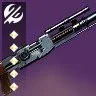 | T0 | 干扰武器 72 | 动能 | 速射瞄准 孤狼 | 聚合充能 | 无序边界 | 5730 | 148819 /接近无限 | 狙击手冥想 远程填装 动能合成 | 建议刷取加速突击版本 |
火箭筒
类型评级 T0。最优秀的非精准输出武器，在高难中也可使用，DPS 顶级，总伤/每盒弹药总伤适中，有不错的神器搭配，要注意虽然各个框架间备弹量有所不同，但是拾取的强化弹药量是一致的都为 3 发。高难中三号位通常选择自填重建或为松身裤选择集束炸弹等双增伤，vog4 爆炸光能被视为好用的增伤
狼群弹药对筒子的增幅大约在 26% 左右
持久印象对筒子的增伤大约在 27% 左右
集束炸弹对筒子的增伤大约在 25% 左右（即使是常规体型）
注：持久印象和爆炸光能都无法让狼群弹药和集束炸弹吃到增伤
双脚架偶尔可以用过机制中补充子弹，但如今不缺重弹的环境很少使用
| 武器 | 图标 | 评级 | 框架 射速 |
属性 | 勇士 | Perk 三号位 | Perk 四号位 | 获取地点 | DPS | 总伤 | 切换 DPS | 备注 | 评级理由 |
|---|---|---|---|---|---|---|---|---|---|---|---|---|---|
| 攻击 T0：最高的单发伤害（1.1），最高的射速和换弹，9 发备弹但是最高的每盒弹药总伤，拥有最强的输出筒子光芒复仇 | |||||||||||||
| 光芒复仇 | 独一档 | 攻击 25 | 烈日 | 集束炸弹/自动填装枪套 丰盈满溢/嫉妒军火库 集体爆破 | 聚合充能/持久印象 元素磨砺 集体行动 | 玻璃拱顶 | 13514 11384 8226 7888 | 118926 100178 83902 100178 | 叛贼边打边劫 边打边劫 嫉妒军火库 集束炸弹 （银白重炮） | 最强的 perk 池和原始特性，全游戏最顶级的 DPS 之一，集束炸弹+聚合充能是最强的抱射输出之一，配合边打边劫更是顶级。自填+持久印象/聚合充能更多是金狙轴，还有丰盈满溢的筒子五连发。嫉妒军火三切如今不常见，集体爆破配合狼头星火泰坦可用 | |||
| 异教徒 | T1 | 攻击 25 | 电弧 | 嫉妒军火库/超充弹匣 集束炸弹 | 换档 爆炸光能 | 忧伤祭坛 | 超充弹匣有意思，然而由于填装速度赶不上发射速度没有那么理想，使用时最好还是切枪打法 | ||||||
| 无效安慰 | 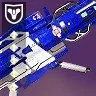 | T1 | 攻击 25 | 冰影 | 重建 嫉妒刺客 冰冷弹匣/斩首 | 爆炸光能/聚合充能 元素磨砺 收割者贡品 | 深渊机灵 | 嫉妒刺客+原始特性曾经作为倾斜筒子的选择，然而如今光芒复仇是他的完整上位 | |||||
| 恶兆 | 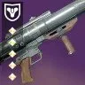 | T1 | 攻击 25 | 虚空 | 双脚架 自填 | 爆炸光能 元素磨砺 集束炸弹 | 智谋 | 边跑边打击杀填装，双脚架+爆炸光能的组合很有意思，或许可以用作清怪洗地筒子 | |||||
| 核心星辰 IV | T1 | 攻击 25 | 缚丝 | 重建 小丑皇弹药筒 | 爆炸光能 元素磨砺 聚合充能 | 赛雀联赛 | |||||||
| 适配 T0：最高的单发伤害，适中的操控和射速，9 发备弹但是最高的每盒弹药总伤，拥有众多优秀 perk 池的筒子，高难反屏障常客之一，为了增加反屏障容错通常选择重建，由于 vog4 在高难偏向使用爆炸光能，棱镜可用元素磨砺 | |||||||||||||
| 轰鸣巨人 | T0 | 适配 20 | 虚空 | 持久印象 | 聚合充能 收割者贡品 自动填装枪套 集束炸弹 | 竞技场 | 顶级持久印象+聚合充能双增伤，如果有哨兵圣盾会比光芒复仇强，可搭配单人合唱补伤害，换弹抱射也有不错的输出 | ||||||
| 注视焦点 | T0 | 适配 20 | 缚丝 | 嫉妒军火库 重建 | 聚合充能/持久印象 爆炸光能 | 先锋 | 加速突击提供额外 6% 增伤，perk 池不错 | ||||||
| 热血上头 | T0 | 适配 20 | 电弧 | 嫉妒军火库 重建 自动填装枪套 | 聚合充能 爆炸光能 元素磨砺 | 先锋 | 加速突击提供额外 6% 增伤，perk 池不错 | ||||||
| 何时何地 | T0.5 | 适配 20 | 冰影 | 重建 小丑皇弹药筒 丰盈满溢 冰冷弹匣 | 爆炸光能 收割者贡品 元素磨砺 | 沙漠 | 起源特性有额外增伤适合收割者贡品，但不足够强，更适合高难 | ||||||
| 红鲱鱼 | 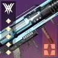 | T0.5 | 适配 20 | 虚空 | 重建 集束炸弹 | 爆炸光能 元素磨砺 持久印象 | 萨瓦图恩的王座世界 | 翻新 perk 后不错，高难很适合搭配杀手之牙裂波者等强力虚空副手，集束炸弹双增伤配合杀手之牙松身裤使用 | |||||
| 巅峰捕食者 | 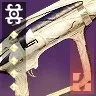 | T0.5 | 适配 20 | 烈日 | 集束炸弹 重建 | 集体爆破 集体行动 爆炸光能 | 最后一愿 | 集束炸弹+集体行动适合星火泰坦，或者冰猎冰术等 | |||||
| 高冲 T1：最高的总伤和爆炸范围和操作，11 发备弹，适中的单发伤害（1.0），打三切的切换 DPS 可以追平攻击适配的 DPS，但是如今三切没有太多使用空间，也没有特别合适的嫉妒军火 perk 池发挥 | |||||||||||||
| 熊啸 | 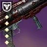 | T0.5 | 高冲 20 | 烈日 | 爆炸光能 | 收割者贡品 | 铁旗 | 爆炸光能收割者贡品双增伤有特色 | |||||
| 海鹰 | T0.5 | 高冲 20 | 缚丝 | 集束炸弹 自动填装枪套 | 聚合充能 元素磨砺 双脚架 | 高塔纪念碑 | perk 池和原始特性回技能不错 | ||||||
| 明日回答 | 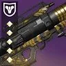 | T1 | 高冲 20 | 虚空 | 嫉妒军火库 空中扳机 重建 | 收割者贡品 双脚架 爆炸光能 | 试炼 | 唯一的嫉妒军火高冲 | |||||
| 无眠 | T1 | 高冲 20 | 电弧 | 自动填装枪套 重建 | 元素磨砺 换档 | 幽梦之城 | |||||||
| 精密 T2：11 发备弹，最低的单发伤害（0.95）和射速，除了有追踪效果之外是其他三个框架的全方面下位 | |||||||||||||
| 低温重炮 | 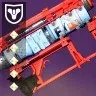 | T1.5 | 精密 15 | 电弧 | 超充弹匣 自动填装枪套 | 换档 聚合充能/持久印象 | 木卫二 | 超充弹匣刚好对上了精密的射速，可以持续进行输出 | |||||
| 火山洪流 | 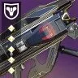 | T1.5 | 精密 15 | 烈日 | 集束炸弹 自动填装枪套 | 聚合充能 爆炸光能 双脚架 | 涅索斯 | 顶级原始特性（双倍弹匣）和优秀的池子，可惜在一个错误的框架 | |||||
| 权势 | 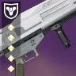 | T2 | 精密 15 | 烈日 | 羸弱能量球 重建 | 集束炸弹 爆炸光能 双脚架 持久印象 | 单人行动 | 羸弱能量球+集束炸弹，狼群弹药可以产很多球 | |||||
刀剑
类型评级 T0。紫刀剑绝大部分作用是用作急切赶路，在高难中还会承担反屏障的角色，输出的 DPS 和总伤/每盒弹药总伤优秀，但是近战伤害手段会更多倾向于喷子狼毒星界之火等，刀剑没有弹药生成属性，胸部弹药生成属性不生效，弹药进度接近 0 弹药生成水平
| 武器 | 图标 | 评级 | 框架 射速 |
属性 | 勇士 | Perk 三号位 | Perk 四号位 | 获取地点 | DPS | 总伤 | 切换 DPS | 备注 | 评级理由 |
|---|---|---|---|---|---|---|---|---|---|---|---|---|---|
| 轻质 T0：最好的常态急切框架，所有框架中轻击急切最远的刀剑，也是真正能被使用的 DPS 最高的框架 | |||||||||||||
| 阴沉利爪 | T0 | 轻质 | 虚空 | 急切刀锋 斩首武器 | 二元轨道 旋风利刃 | 平衡 | 5154 | 157840 | 银白利刃 拓展深渊 两左一右 | 优秀的双增伤和起源特性，输出和赶路都是顶级 | |||
| 三色矛头蝮-4bl | 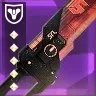 | T0 | 轻质 | 烈日 | 急切刀锋 燃烧野心 | 混沌重塑 聚合充能 居合连斩 | 赛雀联赛 | 5474 | 145269 | 银白利刃 (猎人日志) 两左一右 | 优秀 perk 池，输出和赶路都是顶级，输出燃烧野心配合黎明副歌伤害会更高，但一般没有机会使用黎明副歌，所以采用非黎明副歌 DPS | ||
| 纳斯尔丁 | T1 | 轻质 | 电弧 | 急切刀锋 | 欧洲无人区 | perk 池一般，中个急切用来赶路即可 | |||||||
| 涡流 T0：因为最远的右键距离成为最好的超级跳急切框架，输出适合切枪打法，而不是一直抱着砍。多排 perk 急切可以配合圣贤 4 碎冰触发利刃专注实现超远距离超级跳，具体为先选择其他 perk 带忠诚面具碎冰触发利刃专注，再把 perk 切到急切和踢踏 5，这样就可以保留急切刀锋进行超级跳了。 | |||||||||||||
| 急锋 | 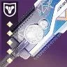 | T0 | 涡流 | 冰影 | 急切刀锋 集体爆破 | 冷冻钢铁 混沌重塑 | 巅峰 先锋 | perk 池优秀，冷冻钢铁功能性强。集体爆破+冷冻钢铁配合药剂神器寒风凛凛可以产出冰影碎片回雷 | |||||
| 陨落铡刀 | T0 | 涡流 | 虚空 | 羸弱能量球 狂乱 斩首 | 急切刀锋 元素磨砺/旋风利刃 诱导推销 腹背受敌 | 猛攻 | 顶级 perk 池，双增伤也有输出能力，无刀剑能量转右键可以 1 发弹药一颗球 | ||||||
| 虚假偶像 | 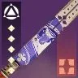 | T0 | 涡流 | 烈日 | 急切刀锋 羸弱能量球 | 元素磨砺/腹背受敌 强力反击 | 苍白之心 | 苍白之心原始特性在速通中经常会搭配奶枪元素超充器刷金枪猎大招击杀 | |||||
| 拜拜咯 | T0 | 涡流 | 缚丝 | 切割 光中藏弹 尖锐收割 | 羸弱能量球 居合连斩 元素磨砺 | 高塔纪念碑 班西 | 顶级原始特性让他成为全游戏唯一无任何前置条件只需造成伤害就可以回转大量技能能量的武器 | ||||||
| 铸造 T0：在高难中，他是最常见最好用的反屏障武器，本身也有不错的功能性和超凡效率 | |||||||||||||
| 骑士之火 | 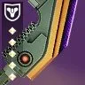 | T0 | 铸造 | 虚空 | 集体爆破 | 急切刀锋 集体行动 羸弱能量球 | 单人行动 | 铸造刀集体爆破非常顶级，常见于冰电职业，药剂神器风寒（寒风凛凛）、NPA 朝向裂口等能够产出元素拾取物并且手雷比较重要的配装中 | |||||
| 拜龙教镰刀 | T0 | 铸造 | 缚丝 | 急切刀锋 切割 | 羸弱能量球 腹背受敌 元素磨砺 | 战争领主的废墟 | 三号位急切刀锋的搭配优秀 | ||||||
| 暗夜恐惧 | T0.5 | 铸造 | 电弧 | 急切刀锋 | 震颤反馈 元素磨砺 换档 聚合充能 | 月球 | 配合震颤反馈能双反 | ||||||
| 孤空伤痕 | 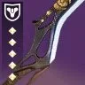 | T0.5 | 铸造 | 烈日 | 急切刀锋 | 元素磨砺 狂乱 转向 | 试炼 | 转向很有意思，“右键打，左键打”我开玩笑的 | |||||
| 噩兆 | T1 | 铸造 | 冰影 | 羸弱能量球 | 冷冻钢铁 居合连斩 | 安可 | 没有急切很可惜，冷钢可以三反 | ||||||
| 波形 T1：最好的清怪模型，输出虽然理论不错但是容易丢伤害并且多人伤害叠加有问题 | |||||||||||||
| 毒鲉 | T0.5 | 波形 | 烈日 | 羸弱能量球 尖锐收割 | 急切刀锋 元素磨砺/腹背受敌 燃烧野心 | 高塔纪念碑 | 5137 | 161063 | 银白利刃 (猎人日志) 一右一左 | 唯一一把波形急切反势不可挡刀，燃烧野心灼烧叠层会触发尖锐收割 | |||
| 至善 | 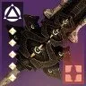 | T1 | 波形 | 电弧 | 羸弱能量球 无情打击 | 混沌重塑 腹背受敌/元素磨砺 | 救赎的边缘 | 最好触发的增伤池子 | |||||
| 深渊之刃 | T1 | 波形 | 缚丝 | 切割 无情打击 | 居合连斩 腹背受敌/元素磨砺 | 班西 | 范围上切割 | ||||||
| 适配 T1.5：没有突出优点的框架，遗赠比其他的适配刀伤害天生高 | |||||||||||||
| 遗赠 | 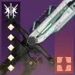 | T0.5 | 适配 | 电弧 | 无情打击 震颤反馈 | 元素磨砺 腹背受敌 居合连斩 | 深岩墓室 | 5692 | 135481 | 银白利刃 (猎人日志) 一右一左 | 天生比其他适配框架伤害高大约 8%，输出顶级刀剑，增伤比较依赖棱镜 | ||
| 强硬切割 | 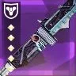 | T1.5 | 适配 | 电弧 | 羸弱能量球 | 急切刀锋 | 高塔纪念碑 | 一左一右刚好一颗球，原始特性对屏障增伤 | |||||
| 另一半 | T1.5 | 适配 | 虚空 | 急切刀锋 | 狂乱 腹背受敌 | 永恒 | |||||||
| 静待回归 | T1.5 | 适配 | 烈日 | 还治彼身 | 急切刀锋 | 幽梦之城 | |||||||
| 和风 | T2 | 适配 | 冰影 | 羸弱能量球 | 冷冻钢铁 | 高塔纪念碑 | 三反刀，没有太多作用 | ||||||
| 攻击 T1.5：夸张的双增伤让其成为理论最高 DPS 的紫刀剑，但是没有太多实战使用 | |||||||||||||
| 永世英雄 | 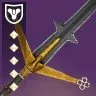 | T1 | 攻击 | 电弧 | 集体行动 | 旋风利刃/元素磨砺 | 贪婪之握 | 6331 | 152997 | 风寒 （药剂包；推推位） 银白利刃 (猎人日志) 一右一左 | 原始特性实际上就是攻击急切刀，但是会有硬直实际上不好用，切出来砍第一刀最好先轻击再衔接重击否则直接重击很容易砍空，双增伤是顶级伤害选择，但是启动困难，最好一个使用药剂包风寒的推推位棱镜猎或棱镜术使用冰粪坑为全队产冰影碎片 | ||
| 史赛克的老练 | 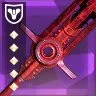 | T1 | 攻击 | 虚空 | 狂暴 | 转向 腹背受敌 | 竞技场 | 7309 | 123642 | 银白利刃 拓展深渊 (猎人日志) 一右一左 | 狂暴和转向都是不好触发的增伤，如果有条件触发的话他是伤害最高的紫刀剑，优秀的原始特性 | ||
线融
类型评级 T2。除了总伤比翻新 A499 略高，DPS 差了相当多，但因为动能合成的存在直接消除了总伤差距，可以说是翻新的全方面下位。或许只有在队伍中几乎无法施加易伤手段、聚合充能叠层并不理想并且是长轴时才适合上场（粒子解构），单人 solo 地牢的情况也可以使用。粒子解构是施加在战斗人员身上的易伤，不与其他易伤叠加
| 武器 | 图标 | 评级 | 框架 射速 |
属性 | 勇士 | Perk 三号位 | Perk 四号位 | 获取地点 | DPS | 总伤 | 切换 DPS | 备注 | 评级理由 |
|---|---|---|---|---|---|---|---|---|---|---|---|---|---|
| 精密 T2：DPS 比适配点射略高，总伤几乎是适配点射的双倍 | |||||||||||||
| 揭纱露眼 | T1.5 | 精密 | 虚空 | 事不过四 | 精准工具/元素磨砺 | 异端深渊 | 3853 | 164743 | 粒子解构 不稳定神枪手 | 顶级增伤原始特性，不错的 perk 池，精准工具在携带手部填装时可以续上，相当于 27% 左右的增伤，不稳定神枪手又可以增加一点 DPS。原始特性志愿容器 15% 加速充能在 DPS 更优秀，异端行径 7% 增伤在总伤上更优秀，通常建议使用志愿容器。 有三种选择（优先级从前到后）：①加速线圈+大师换弹+充能模组②强化电池+大师换弹+弹匣模组③加速线圈+大师充能+充能模组。 由于粒子解构是施加在战斗人员身上的易伤，所以可以蹭队友的粒子解构，在有 15% 易伤时，可以同时吃到粒子解构和拓展深渊的 10% 增伤，很少有这种应用场合。 | |||
| 灾变 | 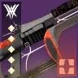 | T1.5 | 精密 | 烈日 | 事不过四 | 聚合充能 聚焦狂怒 元素磨砺/诱导推销 | 门徒誓约 | 顶级 perk 池 | |||||
| 适配点射 T3：全方面劣势于精密框架，特殊用法偶尔有可取之处 | |||||||||||||
| 蔷薇的蔑视 | T2 | 适配点射 | 烈日 | 回转弹药 | 腹背受敌 混沌重塑/聚合充能 | 梦魇根源 | 3977 | 105143 | 原始特性有对光明写魔族的 10% 额外增伤，加上腹背受敌就是深渊机灵尾王的特攻武器 | ||||
| 风暴猎人 | 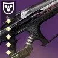 | T2.5 | 适配点射 | 电弧 | 超充弹匣/小丑皇弹药筒 快速命中 | 聚合充能/精准工具 换档/元素磨砺 火线 | 二象性 | 在有队友使用粒子解构时可以用电弧复合吃额外增伤，弑后者同理 | |||||
重型弩箭
类型评级 T2。有接近筒子的不错切换 DPS，好奇之器银白弩箭的增伤，但是由于缺乏优秀的 perk 池或者对应属性并且需要打精准，只有好建议真正有全游戏最高输出之一的 DPS 使用场景
| 武器 | 图标 | 评级 | 框架 射速 |
属性 | 勇士 | Perk 三号位 | Perk 四号位 | 获取地点 | DPS | 总伤 | 切换 DPS | 备注 | 评级理由 |
|---|---|---|---|---|---|---|---|---|---|---|---|---|---|
| 好建议 | 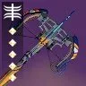 | T0 | 高冲击力 | 虚空 | 嫉妒军火库 | 高地 | 高塔纪念碑 萨瓦拉 | 17960 11196 | 167925 104681 | 3X 需求层级切好建议/ 机巧纬线传家宝好建议 (银白箭袋) | 嫉妒军火库+高地配合三箭虚空猎，有机巧纬线+传家宝+好建议，单人特工命运眷顾的单人情况下顶级 dps（单人一波奈扎雷克）。还有三个需求层级射圈后切换到枯萎囤积/区域拒止等 dot 好建议双切的全游最高 DPS，曾经能刷到加速突击版本，如今已绝版，嫉妒军火库的打法在高难本也可以被使用来疯狂灌伤。 | ||
| 沉没 | 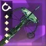 | T2 | 高冲击力 | 冰影 | 自动填装枪套 | 冰冷弹匣 聚合充能 火线 | 高塔纪念碑 | 唯一一把自填冰弩，需求层级射击穿插一发冰弩会比摁射需求层级高大约 25% 的 DPS，但通常没有必要为自己增加操作难度，二号位充能弩箭最优秀 |
榴弹
类型评级 T3。惨不忍睹的总伤和每盒弹药总伤，勉勉强强的 DPS，没有专属增伤神器，只有药剂包电弧复合不祥之兆可以利用，所以电榴弹将是主要的推荐对象，但是电飞蛾的索敌也存在问题。级联点的双增伤爆发用处也极其有限，速射框架在 DPS 以极小的差距优于其他两个框架，总伤略低于其他两个框架，在每盒弹药总伤上由于都拾取 5 发弹药适配和波形要更优秀
可以说动能冲击、突破清场、电弧复合是榴弹的主要增伤神器
拓展深渊在有 15 易伤时也有一定的性价比
电弧致盲生效时间为 10 秒
vog4 配合爆炸光能适配榴弹，队友越多越好，爆炸光能的实际增伤接近 50%
| 武器 | 图标 | 评级 | 框架 射速 |
属性 | 勇士 | Perk 三号位 | Perk 四号位 | 获取地点 | DPS | 总伤 | 切换 DPS | 备注 | 评级理由 |
|---|---|---|---|---|---|---|---|---|---|---|---|---|---|
| 咒骂 | T2 | 速射 150 | 电弧 | 嫉妒刺客 | 诱导推销 | 萨瓦图恩的王座世界 | 4989 | 71963 | 电弧复合 | 不详之兆->驱逐引擎->不祥之兆->21 发咒骂->不详之兆->驱逐引擎->不祥之兆->（突破清场填装）8 发咒骂 | |||
| 末日 | T2 | 适配 120 | 电弧 | 嫉妒军火库 超充弹匣 自动填装枪套 | 爆炸光能/诱导推销 | 智谋 | 4833 | 74503 | 电弧复合 | 2 发不祥之兆->驱逐引擎->4 发末日循环（提高总伤，拉长输出时间保证爆炸光能） 替代：苦乐参半（仄/凯尔之陨） | |||
| 喧嚣 | 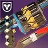 | T2.5 | 波形 120 | 电弧 | 嫉妒刺客 嫉妒军火库 | 我为人人 | 高塔纪念碑 | 虚空箭波形在有单人特工的加持下可以单人一波晚星之主老二 | |||||
| 边缘交通 | 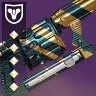 | T2.5 | 适配 120 | 虚空 | 级联点 嫉妒军火库 自动填装枪套 | 爆炸光能 元素磨砺 诱导推销 | 猛攻 | 23733 | 10122 | 单次爆发 拓展深渊 | 级联点爆炸光能作为顶级 DPS 爆发 | ||
| VS 寒冷抑制 | T2.5 | 速射 150 | 冰影 | 级联点 嫉妒军火库 冰冷弹匣 | 爆炸光能/聚合充能 元素磨砺/诱导推销 腹背受敌 | 晚星之主 | 19469 | 8866 | 单次爆发 | 豪华的 perk 池和原始特性，级联点爆炸光能/腹背受敌作为顶级 DPS 爆发 | |||
| 爱与死亡 | T2.5 | 波形 120 | 烈日 | 级联点 嫉妒军火库 重建 辉耀炽热/即兴弹药 | 爆炸光能 聚合充能 元素磨砺 诱导推销 | 月球 | perk 池非常豪华 | ||||||
| 科拉西斯的苦恼 | T2.5 | 速射 150 | 缚丝 | 嫉妒军火库 嫉妒刺客 重建 | 混沌重塑 腹背受敌 诱导推销 | 梦魇根源 | 原始特性对光明邪魔族有额外 10% 增伤 | ||||||
| 永存者 | T2.5 | 速射 150 | 缚丝 | 嫉妒军火库 自动填装枪套 | 聚合充能 元素磨砺/诱导推销 爆炸光能 | 永恒沙漠（史诗） | perk 池和起源特性优秀 |
机枪
类型评级 T3.5。机枪的总伤极高但是 DPS 极低，比绿弹还低，清怪也轮不上他，是真正意义上没有任何用处的武器，框架之间的平衡不错：DPS：速射＞攻击＞适配＞高冲＞热能。总伤：高冲＞适配＞攻击＞速射＞热能。每盒弹药总伤：高冲＞热能＞适配＞攻击＞速射。因此清怪的优选是攻击、适配、高冲，而攻击和适配又因为手感优秀被更多人使用。个人认为击杀记录并不是特别优秀的 perk
参考数值：DPS 2533 · 总伤 243302
| 武器 | 图标 | 评级 | 框架 射速 |
属性 | 勇士 | Perk 三号位 | Perk 四号位 | 获取地点 | DPS | 总伤 | 切换 DPS | 备注 | 评级理由 |
|---|---|---|---|---|---|---|---|---|---|---|---|---|---|
| 惩戒措施 | 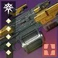 | T2.5 | 攻击 600 | 虚空 | 转向 不稳定弹药 爆破专家 | 元素磨砺 击杀记录 聚合充能 枯萎凝视 | 玻璃拱顶 | 框架、手感、属性、perk 池和原始特性都是最顶级的 | |||||
| 锤头 | 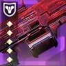 | T3 | 适配 450 | 虚空 | 狂暴 不稳定弹药 事不过四/即兴弹药 | 铤而走险 击杀记录 | 竞技场 | 还行的 perk 池和顶级原始特性 | |||||
| 环形逻辑 | 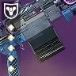 | T3 | 适配 450 | 缚丝 | 萤火虫 事不过四 | 元素磨砺 二元轨道 铤而走险 击杀记录 | 海王星 | 优秀的 perk 池和起源特性 | |||||
| 专业记忆 | 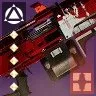 | T3 | 攻击 600 | 缚丝 | 幼雏 重建 | 元素磨砺 集体行动 铤而走险 狂乱 | 苍白之心 | 优秀的 perk 池和起源特性 | |||||
| 忠于职守 | T3 | 适配 450 | 烈日 | 辉耀炽热 | 诱导推销/击杀记录 | 试炼 | 三号位辉耀炽热 | ||||||
| 远方黎明 | T3 | 攻击 600 | 烈日 | 燃烧野心 三连击/即兴弹药 | 转向/二元轨道 辉耀炽热 击杀记录 | 至日 | 三号位燃烧野心 |